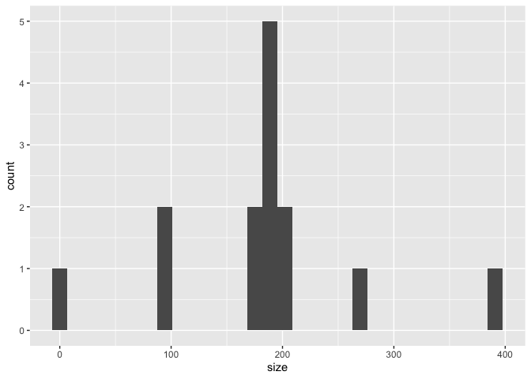

The goal of kaggling is to get an overview of kaggle datasets and their provenance.
Installation
You can install the development version of kaggling like so:
remotes::install_github("heike/kaggling")This package relies on a valid installation of kaggle (python 3 based package). This includes a Kaggle account and authorization tokens for the API. Refer to https://github.com/Kaggle/kaggle-api for installation instructions.
Basic Usage
Load the package functionality:
Search kaggle
The main functionality is centered on searching for data sets using a search key word:
ames <- search_kaggle("ames iowa housing")
dim(ames)
#> [1] 14 7Kaggle hosts 14 data sets that are found as a result of a search on ‘ames iowa housing’.
head(ames)
#> ref
#> 1 marcopale/housing
#> 2 carlmcbrideellis/house-prices-advanced-regression-solution-file
#> 3 emurphy/ames-iowa-housing-prices-dataset
#> 4 nabilabdul/ames-house-price-prediction-regression
#> 5 zeeshanmulla/advance-house-price-predicitons
#> 6 anishpai/ames-housing-dataset-missing
#> title size lastUpdated
#> 1 Ames Iowa Housing Data 397KB 2020-03-18 20:24:26
#> 2 House Prices: Advanced Regression 'solution' file 6KB 2020-09-11 15:40:17
#> 3 Ames Iowa Housing Prices Dataset 190KB 2018-04-25 14:54:54
#> 4 🏘️Ames House Price Prediction Regression 🌎🚗🛣️ 98KB 2022-07-20 12:01:40
#> 5 Advance House Price Predicitons 274KB 2020-01-05 10:22:15
#> 6 Ames Housing Dataset Engineered 192KB 2020-09-30 14:58:26
#> downloadCount voteCount usabilityRating
#> 1 3450 28 0.9705882
#> 2 985 39 1.0000000
#> 3 519 9 0.4117647
#> 4 118 8 0.7941176
#> 5 780 4 0.7058824
#> 6 204 6 0.9117647
library(tidyverse)
# the majority of the datasets has a size of about 200 KB.
ames %>% mutate(
size = parse_number(size)
) %>% ggplot(aes(x = size)) + geom_histogram()
Get Meta information
The data set identifier is stored in the variable ref.
ames$ref[1]
#> [1] "marcopale/housing"Meta information is extracted from kaggle using the function get_meta.
# single set of meta information
get_meta(ames$ref[1])$meta
#> [[1]]
#> id id_no datasetSlugNullable ownerUserNullable
#> 1 marcopale/housing 545987 housing marcopale
#> usabilityRatingNullable titleNullable subtitleNullable
#> 1 0.9705882 Ames Iowa Housing Data for Regression Models
#> descriptionNullable
#> 1 ### Context\n\nThe Ames Housing dataset is a great alternative to the popular but older Boston Housing dataset.\n\n\n### Content\n\nThe Ames Housing dataset contains 79 explanatory variables describing (almost) every aspect of residential homes in Ames, Iowa with the goal of predicting the selling price.\n\n\n### Acknowledgements\n\nThe Ames Housing dataset was compiled by Dean De Cock in 2011, for use in data science education.\n\n\n### Inspiration\n\nThe Default task for this dataset is Regression.
#> datasetId datasetSlug hasDatasetSlug ownerUser hasOwnerUser usabilityRating
#> 1 545987 housing TRUE marcopale TRUE 0.9705882
#> hasUsabilityRating totalViews totalVotes totalDownloads
#> 1 TRUE 22728 28 3452
#> title hasTitle subtitle hasSubtitle
#> 1 Ames Iowa Housing Data TRUE for Regression Models TRUE
#> description
#> 1 ### Context\n\nThe Ames Housing dataset is a great alternative to the popular but older Boston Housing dataset.\n\n\n### Content\n\nThe Ames Housing dataset contains 79 explanatory variables describing (almost) every aspect of residential homes in Ames, Iowa with the goal of predicting the selling price.\n\n\n### Acknowledgements\n\nThe Ames Housing dataset was compiled by Dean De Cock in 2011, for use in data science education.\n\n\n### Inspiration\n\nThe Default task for this dataset is Regression.
#> hasDescription isPrivate keywords_1 keywords_2 keywords_3
#> 1 TRUE FALSE housing real estate regression
#> keywords_4 licenses.nameNullable licenses.name licenses.hasName
#> 1 ratings and reviews GPL-2.0 GPL-2.0 TRUEget_meta expands the dataset by the list variable meta.
ames <- get_meta(ames)
ames_meta <- ames %>% tidyr::unnest(cols=meta, names_sep="_")
# There is a plethora of licenses involved
ames_meta %>% count(meta_licenses.name)
#> # A tibble: 6 × 2
#> meta_licenses.name n
#> <chr> <int>
#> 1 CC0-1.0 3
#> 2 GPL-2.0 1
#> 3 ODbL-1.0 1
#> 4 copyright-authors 1
#> 5 reddit-api 1
#> 6 unknown 7